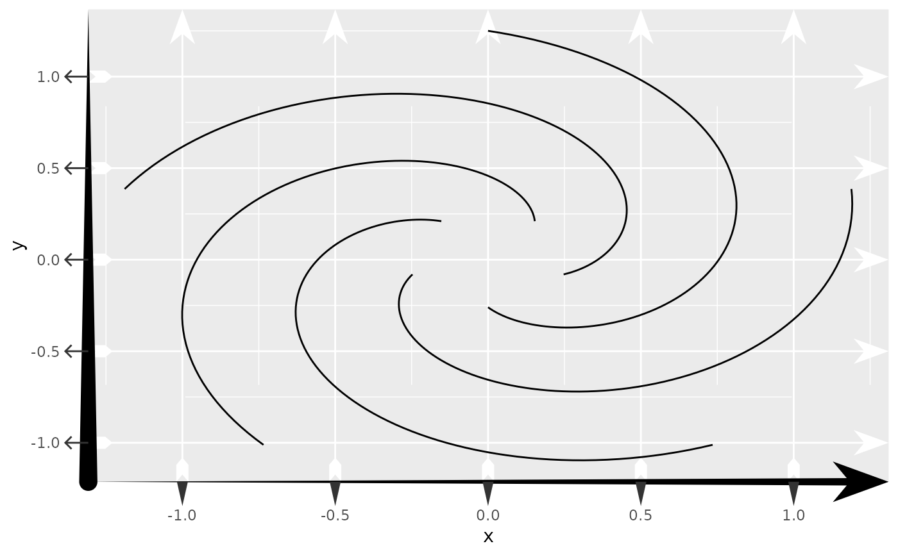

Arrow theme element
element_arrow.RdUsing the theme system, draws arrows in places where
element_line() are valid theme elements. Note
that the default use of element_arrow() does not actually draw an arrow
unless one of the arrow_ arguments is set.
Usage
element_arrow(
colour = NULL,
linewidth = NULL,
linewidth_head = NULL,
linewidth_fins = NULL,
stroke_colour = NULL,
stroke_width = NULL,
arrow_head = NULL,
arrow_fins = NULL,
arrow_mid = NULL,
length = NULL,
length_head = NULL,
length_fins = NULL,
length_mid = NULL,
resect = NULL,
resect_head = NULL,
resect_fins = NULL,
justify = NULL,
force_arrow = NULL,
mid_place = NULL,
lineend = NULL,
linejoin = NULL,
linemitre = NULL,
inherit.blank = FALSE
)Arguments
- colour
The colour of the arrow.
- linewidth, linewidth_head, linewidth_fins
The width of the arrow shaft in millimetres.
linewidthis the default width, whereaslinewidth_headandlinewidth_finscan set non-uniform width at the end and start of the line respectively.- stroke_colour
The colour of the arrow outline.
- stroke_width
The width of the arrow outlien.
- arrow_head, arrow_fins, arrow_mid
Arrow ornament shapes for the arrow head, arrow fins and middle arrows respectively. Can be one of the following: *
NULLfor not drawing the ornament. * A<character>of length 1 naming an ornament constructor without the"arrow_"-prefix, like"head_wings"or"fins_feather". * A 2-column matrix, such as those built by the ornament constructors.- length, length_head, length_fins, length_mid
Determines the size of the arrow ornaments.
lengthsets the default length, whereaslength_head,length_finsandlength_midset the lengths of the arrow head, arrow fins or middle arrows respectively. Can be one of the following:A
<numeric>to set the ornament size relative to thelinewidth{_\*}settings.A
<unit>to control the ornament size in an absolute manner. Behaviour of relative units such as"npc"or"null"is undefined.
- resect, resect_head, resect_fins
A
numeric(1)denoting millimetres or<unit>to set an offset from the start and end points of the line such that the arrow is shortened.resectsets the default offset, whereasresect_headandresect_finssets these offsets for the end- and start-point respectively.- justify
A
numeric(1)between [0-1] to control where the arrow ornaments should be drawn relative to the (resected) path's endpoints. A value of0(default) sets the ornament's tips at the path's endpoint, whereas a value of1sets the ornament's base at the path's endpoint.- force_arrow
A
logical(1)which ifTRUE, will draw arrow ornaments even when the path's length is shorter than the arrow heads and fins. IfFALSE, such ornaments will be dropped.- mid_place
Sets the location of middle (interior) ornaments when
arrow_midhas been provided. Can be one of the following:A
<numeric>vector with values between [0-1] to set middle ornaments at relative positions along the arc-length of the (resected) path.A
<unit>to fill a path with ornaments with th provided unit as spacing between one ornament to the next.
- lineend
A
character(1)setting the style of the line ends without ornaments. Can be"round","butt"or"square".- linejoin
A
character(1)setting the style of path corners. Can be"round","mitre"or"bevel".- linemitre
A
numeric(1)greater than 1 setting the path's mitre limits.- inherit.blank
A
logical(1)indicating if this element should inherit the existence of an<element_blank>among its parents. IfTRUE, the existence of a blank element among its parents will cause this element to be blank as well. IfFALSE, any blank parent element will be ignored when calculating final element state.
Value
An <element_arrow> object that can replace <element_line> objects
in theme().
Examples
# Setting a bunch of arrows all over the theme
ggplot(whirlpool(5), aes(x, y, group = group)) +
geom_path() +
theme(
# Proper arrow with variable width for x-axis line
axis.line.x = element_arrow(
arrow_head = "head_wings", linewidth_head = 2, linewidth_fins = 0
),
# Just a variable width line for the y-axis line
axis.line.y = element_arrow(linewidth_head = 0, linewidth_fins = 5,
lineend = "round"),
# Arrows for the y-axis ticks
axis.ticks.y = element_arrow(arrow_fins = arrow_head_line(angle = 45)),
# Variable width lines for the x-axis ticks
axis.ticks.x = element_arrow(linewidth_head = 3, linewidth_fins = 0),
axis.ticks.length = unit(0.5, 'cm'),
# Arrows for major panel grid
panel.grid.major = element_arrow(
arrow_head = "head_wings", arrow_fins = "fins_feather", length = 10
),
# Shortened lines for the minor panel grid
panel.grid.minor = element_arrow(resect = 20)
)
